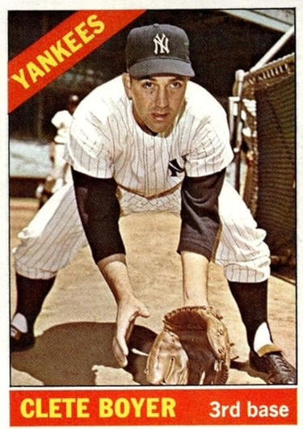

Clete Boyer
Career Highlights & Facts
(Facts are AI-generated and may require verification)
- Participated in a historic World Series game where two siblings hit home runs, a first in major league history.
- Renowned for exceptional defensive range at the hot corner, frequently making putouts and throws from a kneeling position.
- One of 14 children in a family where every brother signed a professional baseball contract.
Would you like to find out more about Clete Boyer?
Read Player Biography
Clete Boyer
July 14, 2015
/
in
BioProject - Person
Siblings
/
by
admin
This article was written by
Joseph Wancho
It was Game Six of the 1964 World Series. The Mayor and the town Treasurer of Alba, Missouri were relaxing in box seats behind the St. Louis Cardinal’s dugout at Busch Stadium. Both His Honor and the Treasurer enjoyed a singular advantage over all of the other spectators in the ballpark on this autumn day. While most of the partisan crowd was cheering for the hometown Redbirds over the visiting New York Yankees, the visitors from Jasper County were guaranteed a victory no matter the outcome on the diamond. The Mayor and the Treasurer were none other than Mr. and Mrs. Vern Boyer. Their sons were
Ken
and Clete, opposing third baseman for St. Louis and New York respectively. “We’ll just be rootin’ for each of the boys every time he’s involved in a play. This is something we have wished would happen,”
1
said Mabel Boyer. Vern concurred with his wife; “Oh gosh, we couldn’t favor one team over the other,”
2
added Pop.
The 1964 Fall Classic was a seven-game classic between two iconic major league teams. For Clete Boyer, this was his fifth consecutive series. His record thus far was two up and two down. As far as his older brother was concerned, it was his first taste of meaningful October baseball. “Well, you can imagine we’re particularly happy for Ken, it’s his first time in the Series, but we’re rooting for both of them,” said Vern.”
3
But now that the Series had reached the seventh game, Mabel felt a bit melancholy. “When it got to the seventh game, I got to feeling unhappy. One of my boys had to lose,”
4
explained Mabel.
Game Seven was a bit of an oddity as both the Boyer brothers homered in the game. They were the first in major league history to accomplish the feat. Ken hit a solo shot off of Steve Hamilton in the seventh inning that pushed the Cards to a 7-3 lead. Clete and Phil Linz both went yard in the ninth inning off a tiring Bob Gibson. But they each hit theirs with the bases empty and the Cards wrapped up the game, 7-5, and the World Championship.
Earlier in the series, Ken Boyer smacked a grand slam in Game Four at Yankee Stadium. It ended up being the difference as St. Louis won, 4-3. “When he hit that homer, I loved it,” recalled Clete. “In my heart, I think I was pulling for him because it was his first Series.”
5
Cletis Leroy Boyer was born on February 9, 1937 in Cassville, Missouri. He was one of fourteen children (seven boys and seven girls, although one daughter died in infancy) born to Vern and Mabel Boyer. Before Vern took to his political aspirations, he made his living as a marble cutter. The Boyers raised their family in Alba, Missouri, tucked away in the southwest corner of the state. Alba was a small town, the population around 350 people. All of the Boyer boys were exceptional athletes, and each one would sign a professional baseball contract. Cloyd, a pitcher, was ten years older than Clete. He broke into the major leagues in 1949 with the St. Louis Cardinals. But arm problems curtailed his career, and 1955 was his last season in the major leagues. Ken broke into the major leagues in 1955 as a third baseman for St. Louis. He was named the National League’s MVP in 1964, played in several All-Star Games and won numerous Gold Gloves. Later, he served as the Cardinals manager from 1978-1980. The other sons (Lynn, Ron, Wayne and Len) did not advance beyond the minor leagues.
Clete was a two-sport star at Alba High School. He was a dead-eye shooter in basketball and a shortstop on the baseball team. Scouts came from everywhere to take a gander at the prospect. In the end it was Kansas City that signed Clete to a reported bonus of $35,000 on May 30, 1955.
6
Because of the “Bonus Baby” rule of the time, Boyer was required to stay on the Athletics’ roster for a minimum of two years. If not, the club would surrender their rights to Clete. Each team was limited to signing two “bonus baby” players per year.
The Athletics had been sold and relocated to Kansas City from Philadelphia. There was much speculation about the relationship between the new owners of the Athletics and the Yankees. The signing of Boyer is one such example. There were those who believed that perhaps it was the Yankees who put up the $35,000 to sign Boyer, since they had already exceeded their bonus limit. What may give this story some credence is that the Yankees did not make a bonus offer for Boyer. This was in spite of legendary Yankee scout Tom Greenwade living in close proximity to the Boyer clan. But for the present time, Boyer would wear the Athletics jersey and report to K.C. Manager Lou Boudreau.
Over the next two seasons, Boyer was stationed at shortstop, second and third base at various times. He did start 34 games at second base in 1956, his most extended time in the A’s lineup. But like many young players, both those who had the benefit of playing in the minors and those who had not, he was overmatched by big league pitching. The Athletics tried to include Boyer in a trade to the Yankees on February 19, 1957. But Commissioner Ford Frick vetoed the trade, ruling that it would violate the two-year agreement. It is curious that a team such as the Athletics, who were short on talent, would try to rid themselves of a prospect in whom they had allegedly invested a large sum of cash, especially before his required two-year apprenticeship on the varsity was up. Regardless, the 13-player swap was legally consummated on June 4, 1957, with Boyer going to New York.
From 1955 to 1959, the Athletics and Yankees made 16 transactions that involved 61 players. Ryne Duren recalled that when Cleveland traded Roger Maris to Kansas City in March, 1958, the New York clubhouse was jubilant. “Well, we just got Maris,”
7
shouted Yogi Berra, Gil McDougald and Hank Bauer. Indeed the Yankees did, as they acquired Maris in December, 1959. Perhaps Bauer was not so gleeful as he was headed to Kansas City as part of the seven-player deal.
The Yankees did not need to keep Boyer on their big league roster, sending him instead to Class A Binghamton of the Eastern League. Years later, Boyer was inducted into the Binghamton Baseball Shrine and recounted fond memories of his time there. “It’s a big thrill, it really is,” said Clete of the induction. “(Binghamton) was the first place I started playing regularly. I got my start there. I think it’s a place that will always mean a lot to me.”
8
He was promoted to Class AAA Richmond of the International League the following season, and showed some power as he tallied 22 homers and drove in 71 runs. He began the 1959 season with the Yankees. But Tony Kubek was the starting shortstop, so Boyer’s playing time was limited. He saw some action at third base, and he returned to Richmond in early June to get more comfortable playing the hot corner.
In 1960 the Yankees began a string of five straight pennants. They had a formidable lineup with Moose Skowron at first base, Bobby Richardson and Kubek at second and short, and Boyer at third base. Mickey Mantle, Yogi Berra, Hector Lopez and Roger Maris manned the outfield. Elston Howard was an outstanding catcher. Towards the end of the string they added Joe Pepitone and Tom Tresh. Whitey Ford, Jim Bouton and Ralph Terry anchored the pitching staff. New York was the cream of the crop in the American League.
Boyer started 93 games at third base and 20 more at shortstop as he was integrated into the starting lineup. Gil McDougald was in his final season that year, and manager Casey Stengel, known for his penchant for using a platoon system, ran whatever lineup onto the field that gave him the best chance of winning.
Boyer was not as enamored with Stengel as perhaps the veterans were. In Game One of the World Series against Pittsburgh, the Yankees found themselves in a 3-1 hole after the first inning. Berra and Skowron led off the top of the second with consecutive singles. Boyer strode to the plate for his initial at-bat in the series, but was called back to the dugout in favor of a pinch hitter, Dale Long. Boyer was so humiliated that he retreated to the clubhouse, inconsolable. “If the world had ended the next minute I wouldn’t have cared,”
9
said Clete. Long flied out to right field and Richardson lined out to left field for a double play. Stengel received much criticism but defended the move, saying he was playing for the big inning. The Pirates ultimately won the Series in seven games, and Stengel was let go at the end of the year. Ralph Houk, who had joined Stengel’s staff in 1958, replaced him.
Boyer was known for his defense and strong throwing arm. He adapted to playing third base rather quickly and often played shallow to take bunt attempts away. However, the New York Yankees were not dubbed the “Bronx Bombers” for no reason. Because of the tremendous power on the club, Boyer was continually placed in the eight hole on Houk’s lineup card. Hitting in front of the pitcher did not allow Boyer to see many good pitches. A spacious Yankee Stadium was also not conducive for Boyer to hit the long ball.
While the M&M boys were chasing Babe Ruth’s single season home run record in 1961, Boyer continued to hone his craft at third. He led the league in assists (353), and that was never more evident than on the big stage of the World Series. The Yankees breezed through the American League, headed for a matchup with Cincinnati. In Game One, Whitey Ford shut out the Reds on a two-hitter in the Yanks’ 2-0 win. But as good as Ford was, it was the defense behind him that had the Reds buzzing. “Clete always made great plays,” said Ford, “But no third baseman ever played better than Clete did in the 1961 Series.”
10
In the second inning, Gene Freese whistled a liner down the third base line. Clete dove to his left, fielded the baseball on the short hop in foul territory and from his knees, threw out Freese by a couple of steps. Likewise in the eighth inning, pinch-hitter Dick Gernert sent a ground ball between shortstop and third base. Boyer dove to his left, snagged the ball and again made the strong throw from his knees to get Gernert. “The guy is a switch-diver,” said Gernert. “I was sure my hit was through the hole. He threw the ball from his knees. I couldn’t believe it, and he got me at first easy.”
11
Gernert’s teammate Vada Pinson added,”Clete Boyer gets more on the ball from his knees than a lot of third baseman do while standing up.”
12
Gernert and Pinson may have been witnessing Boyer’s majesty for the first time. But their comments echoed what Yankee great and current coach Frank Crosetti knew all along. “I came up too late for Joe Dugan,” said Crosetti, “but I have seen everybody who played third base for this club since 1932, and this man is the best. What can’t he do? He has tremendous arm power. He not only throws hard when he is down, but he throws strikes to first base.”
13
Clete Boyer had his best all-around season in a Yankee uniform in 1962. Defensively, he again led the league in assists (396), but also in putouts (187) and double plays (41). His bat came alive as he smacked 18 home runs and drove in 68 runs. He also set career marks in runs (85), hits (154), doubles (24), batting average (.272) and OBP (.331). The Bombers needed a strong September (17-9) to hold off the Twins and win the pennant by five games. Then they topped the San Francisco Giants in seven games in the Series. Boyer’s fine season carried over to the World Series, as he was second on the team in hitting with a .319 average. He hit one of three Yankee home runs in the Series. In Game One, with the score knotted at two apiece, Boyer connected off Billy O’Dell on a line drive round- tripper to left field. The blast gave the Yanks a lead they did not relinquish in the 6-2 victory.
Although New York won the pennant in the junior circuit the following two seasons, they could not take the next step to winning a World Championship. They were swept in 1963 by the Los Angeles Dodgers in four games as Sandy Koufax beat them twice, striking out 15 in Game One. Then they lost in seven games to the St. Louis Cardinals in 1964.
Starting in 1965 the Yankees were getting a little long in the tooth. Their production slipped and so did their place atop the standings. In 1966 they found themselves on the bottom looking up as they finished in last place, 26½ games behind pennant-winner Baltimore. It was time to tear it down in New York and build it back up. The farm system was not producing the players it had decades earlier.
For his part, Boyer remained consistent. He played between 144 and 152 games and drove in between 52-58 runs from 1963-1966. However, Boyer was part of the housecleaning and was shipped to Atlanta for outfielder Bill Robinson and pitcher Chi-Chi Olivo November 29, 1966. The Braves had just relocated to Atlanta from Milwaukee for the 1966 season. With Hank Aaron, Joe Torre, Rico Carty and Felipe Alou, the Braves had a solid nucleus in place. The Braves were delighted to obtain a player of Clete’s ability. “I’m glad he’s finally on my side,” said Atlanta skipper Billy Hitchcock. He beat me enough times when I was managing at Baltimore. But I tell you, he can swing the bat pretty good, and you’re going to see some real defensive plays with Boyer at third base.”
14
Atlanta President John McHale simply said, “We’re happy to get Boyer. He’s a real major league player, a pro.”
15
Eddie Matthews, who had been a stalwart for years at third base since the last year the Braves were located in Boston, was dealt a month later to Houston. The Braves home park, Fulton-County Stadium, was a more hitter-friendly park then Yankee Stadium. Boyer smacked a career-high 26 home runs and drove in 96 runs. Elevated to the five hole in the batting lineup, he hit behind Torre and Aaron and found the spot more to his liking. “I wanted the trade to look good,” said Boyer. “I wanted to do well because I was taking the place of a player like Matthews. You take the place of someone like him, then you feel the pressure.
16
In 1969, both leagues expanded by two more teams and they each went to a two- division format. This created a round of playoffs before the World Series. No longer was the team with the best record guaranteed a spot in the Fall Classic. The Braves were placed in the National League West Division, and edged out San Francisco for the inaugural division title. But they faced the New York Mets who had made an amazing run to overtake Chicago and win the East Division. The Mets, truly a team of destiny, mowed down the Braves in three straight to win the pennant and eventually the World Series.
Boyer’s 1968 season had ended prematurely when he was hit on the hands, first by the Giant’s Juan Marichal and then by the Dodgers Don Drysdale. But he bounced back in 1969 to help lead the Braves into the playoffs. He was also the recipient of his first and only Gold Glove Award in 1969. “Any time I see the ball hit toward Clete, I know it’s a sure out,” said Braves pitcher Phil Niekro. “He is amazing.”
17
In the early stages of the 1971 season, Boyer made public his dissatisfaction with Braves General Manager Paul Richards and Manager Lum Harris. In spite of Boyer’s fine year in 1969, Richards slashed Clete’s salary by $2,500 in 1970. In 1971, he wanted to trim a little more of Boyer’s pay. When Boyer inquired as to why, Richards offered no explanation other than to say that there were reasons. But it was Richards who raised Boyer’s salary from $30,000 to $47,000 in Boyer’s five years as a Brave. “I hate to admit that I pay that much to such a sorry player,” said Richards, “particularly one who is as scared as he is at home plate.”
18
“There shouldn’t be a place for a guy like Richards in baseball, and the manager Lum Harris wouldn’t be here unless he was one of Paul’s pals. Eddie Matthews (Braves coach) should be the manager – that’s how much I think of him,”
19
said Boyer. Of course, these comments caused controversy as Matthews never asked to be the head man and it looked like Eddie was undermining Harris. Matthews was quite satisfied being a coach. Harris had instituted a midnight curfew before day games. For a person like Boyer, who was characterized as a carouser, any curfew would be tough to follow. “We decided to put it in because some of the things these players were doing right in front of me,” said Harris. “I’m tired of being shown up by those things, and I am not going to stand for it.”
20
Richards and Boyer worked out an agreement, with Boyer basically buying his release from Atlanta for $10,000.
But a bigger story was brewing when Bowie Kuhn levied a $1,000 fine on Boyer for gambling on college and pro football games in 1968 and 1969. “It is true that a couple of years ago I made a few bets on football games with a man I thought was my friend,” said Boyer. “I have never bet on baseball and I have never made any kind of bet with anyone I know to be a bookmaker. There are parlay cards all over the locker rooms, with guys putting up a buck here and a buck there. They are as guilty as I am.”
21
Any interest in Boyer cooled and he was suddenly on the outside looking in. Clete suspected that he was being blackballed by the rest of the teams. At first Oakland showed some interest, but their interest cooled. Marvin Miller, who was Executive Director of the Player’s Association, worked with the commissioner’s office and Boyer’s $10,000 buyout price was returned. Boyer finished out the 1971 season playing for the Hawaii Islanders of the Pacific Coast League.
With no offers coming his way, Clete’s 16-year major league career came to an end. His lifetime batting average was .242 with 162 home runs and 654 RBI. He fielded his third base position at a .965 clip.
From 1972 to 1975 Boyer moved on to Japan, playing for the Taiyo Whales. He was well compensated, making a reported $96,000 a year, which doubled his salary the last year he was with Atlanta. “Japanese pitchers don’t have much speed but I’ve found they have extremely good control,” said Boyer. “Probably five or six pitchers in the United States throw sinkers. Here, they all pitch sinkers.”
22
That style of pitching must have agreed with Boyer, as he clubbed 71 homers in his four seasons in Japan.
After his playing days, Boyer did not stray far from the ball diamond. He was the third base coach in Oakland for Billy Martin, Steve Boros and then Jackie Moore from 1980-1985. He later joined Martin again in 1988 in New York. Boyer returned to the Yankees coaching staff under Buck Showalter from 1992-1994. He also spent time as a roving infield instructor for the Yankees minor league teams.
Boyer lived outside of Atlanta in retirement, making his summer home in Cooperstown, New York. There he owned a restaurant, Clete Boyer’s Hamburger Hall of Fame. Boyer also attended baseball card and memorabilia shows when his schedule allowed.
Clete Boyer passed away on June 4, 2007 in Atlanta from a stroke. He was survived by his children, Mickey, Brett, Valerie, Colette, Stephanie and Jerran.
As good a defensive player as Clete Boyer was, he had the misfortune to play in the same era as Baltimore’s Brooks Robinson. Robinson, generally regarded as the greatest defensive third baseman ever to play the game, won 15 straight Gold Glove Awards from 1960-1975.
“He (Boyer) never got the publicity because he didn’t hit for a lot of power or a high average,” said Crosetti. “The only difference between Brooks and Clete was that Brooks was a better hitter, not fielder.”
23
Robinson may have agreed with Crosetti’s assessment. “In terms of catching the ball and throwing, Clete Boyer was the best defensive third baseman I played against,” he said.
24
Notes
1
New York Times
, October 6, 1964, 45
2
Ibid
3
New York Times
, October 15, 1964, 45
4
Sporting News
, November 14, 1964, 6
5
Sports Illustrated
, June 18, 2007
6
Jeff Katz
, The Kansas City Athletics & the Wrong Half of the Yankees
, Maple Street Press, Hingham MA, 2007, 142
7
Katz, 188
8
Binghamton Press and Sun Bulletin
, August 11, 2002,1B
9
Peter Golenbock,
Dynasty: The New York Yankees, 1949-1964
,Prentice-Hall Inc, Englewood Cliffs, N.J., 1975,260
10
Tony Kubek and Terry Pluto,
Sixty-One; The Team, The Record, The Men
, Macmillan Publishing Co., New York, NY, 133
11
Ibid
12
Ibid
13
Sporting News
, November 15, 1961, 7
14
Sporting News
, December 17, 1966, 30
15
Ibid
16
Sporting News
, September 2, 1967, 12
17
Sporting News
, June 13, 1970, 21
18
Sporting News
, June 12, 1971, 14
19
Newsday
, June 11, 1971, 118
20
#
Sporting News
, June 12, 1971, 15
21
Ibid
22
Syracuse Post
, September 19, 1972
23
Kubek and Pluto, 158
24
Danny Peary,
We Played the Game
, Hyperion, New York, NY, 1994, 491
Full Name
Cletis Leroy Boyer
Born
February 9, 1937 at Cassville, MO (USA)
Died
June 4, 2007 at Lawrenceville, GA (USA)
Tags
Siblings
·
Career Totals
| WAR | AB | H | HR | BA | R | RBI | SB | OBP | SLG | OPS | OPS+ |
|---|---|---|---|---|---|---|---|---|---|---|---|
| 27.8 | 5780 | 1396 | 162 | .242 | 645 | 654 | 41 | .299 | .372 | .670 | 86 |
Statistics via Baseball-Reference.com
The Original Clue